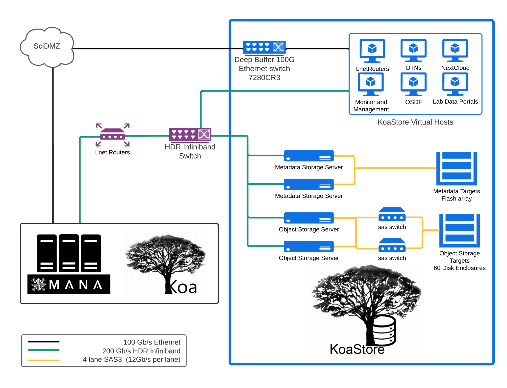

The Components of Koa
Koa is comprised of two different clusters of systems, several support services and of which users primarily interface directly with one of these cluster and supporting infrastructure
- Computational cluster (Koa)
- Lustre Storage cluster (KoaStorage)
- User Accessible Support Systems
- Login Nodes
- Data Transfer Nodes
- Networking
- Ethernet (1/10/25/100 Gbit)
- Infiniband (100/200Gbit)
Computational Cluster (Koa)
Koa is the 3rd iteration of a central High Performance Computing (HPC) cluster that is centrally managed at the University of Hawaii. Koa is preceded by the UH-HPC (2014) and Mana (2019). While the name of the central HPC at UH has changed over the years, the hardware from each iteration is added to the previous generations, making Koa a heterogeneous HPC with both Intel and AMD processor that span the processor generations from 2014 to present day. Hardware specifications
Koa consist of over 230 nodes with a total of 7,900+ CPU cores, 57+TB of total CPU memory and 140+ GPUs.
Being a Condo cluster, Koa is made of about 50% condo nodes, purchased by departments and researchers, and 50% community nodes, funded by the University of Hawaii and grants that Research Cyberinfrastructure has been awarded (NSF awards: #1920304, #2201428 and #2232862 ).
KoaStorage (Lustre Storage Cluster)
KoaStorage is small purpose built cluster dedicated to managing the 6+ PB storage array that users use to store all data on Koa. KoaStorage utilizes a storage system known as Lustre . Data on Lustre is divided into two types of data.
Meta data: Where data for a user file is located, file ownership and permissions. KoaStorage utilizes solid state drives (SSDs) in order to provide quick retrieval times.
Object data: The actual use file data. KoaStorage utilizes a mixture of spinning hard drives (HDDs) and SSDs (SAS and NVMe). To help with performance, as files grow they are striped across multiple storage locations allow for increased read and write performance.
User accessible support systems
Login Nodes
Two types of login nodes exist on Koa reachable at: koa.its.hawaii.edu
Standard login nodes: All users with active accounts on Koa are able use the standard login nodes with an SSH client and valid UH credentials with DUO enabled. These provide command-line access only via SSH.
Open OnDemand: Users of Koa can utilize a web browser to connect to the Open OnDemand (OOD) nodes of Koa to provide a standard platform to access Koa. The OOD interface provides the ability to upload and download small files (less than 5 GB in size), edit text files in the browser, look at your home directory, connect to the command-line on Koa, and access several applications that interactive, such as:
- JupyterLab & Jupyter Notebook
- Matlab (with a valid license (TAH license will work: site license office)
- A virtual desktop for applications that require graphics
- Rstudio Server
Data Transfer Nodes
A Data transfer node (DTN) is a single purpose server to aid in optimizing the transfer of data to and from Koa. While at lower speeds ( 1 or 2 Gbit/s) a DTN may not show any difference than a login node, at the higher transfer rates (10/25/50/100 Gbit/s) a DTN can begin to show performance benefits. Koa has two different DTNs.
User accessible DTN: users are able to SSH into this DTN located at: koa-dtn.its.hawaii.edu . This node is setup with access to the storage systems of Koa and a series of different transfer tools. Standard tools like sftp, scp and rsync will limit the transfer rates regardless of using this node or a login node, just due to the nature of how they need to encrypt and decrypt the data.
Globus DTN: Koa has a Globus collection named UH Koa Collection. For Globus, we have four servers managing this particular collection and are all connected to the internet at 100Gbit/s. In the case both ends are well tuned, have Globus, transfers can go much quicker than using tools like sftp, scp and rsync. In recent testing, we have seen download speeds from test Globus collections located on the West cost, Central and East Cost of the United States ranging from 1 GiB/s u to 4GiB/s.
Networking
Koa has two different networks that users utilize when transfer data inside of Koa as well as when moving data to and from Koa from an external system.
Ethernet Network: The Ethernet network of Koa provides the standard network access allowing the nodes of Koa to access the internet. The internal network utilizes a mixture of 1/10/25/50/100 Gbit connections. Nodes that users access are typically connected to this particular network at 1/25/50 Gbit, depending on when the node was added to Koa. Border systems, such as the login nodes and DTNs, are all connected at 100 Gbit/s to the UH networks, which are external to Koa.
Infiniband Network: The Infiniband (IB) network on Koa provides a high speed, low latency network that is ideal for Multi node workloads that utilize Message Passing Interface (MPI). This network currently uses what is known as High Data Rate Infiniband (HDR IB), which operates at either 200 Gbit/s or 100Gbit/s. This network is also used to transport file system traffic for user home directories as well as the directories on Lustre (lab storage, koastore, user scratch). This network is entirely internal to Koa.
